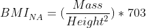
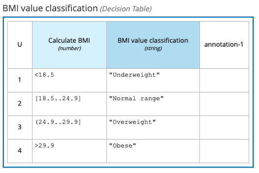
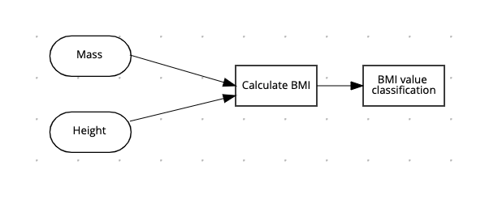
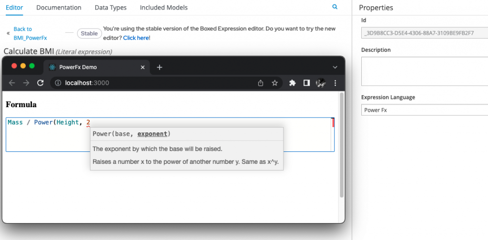
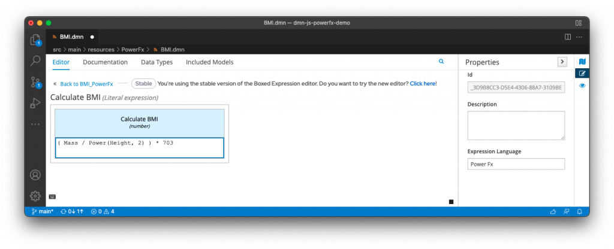
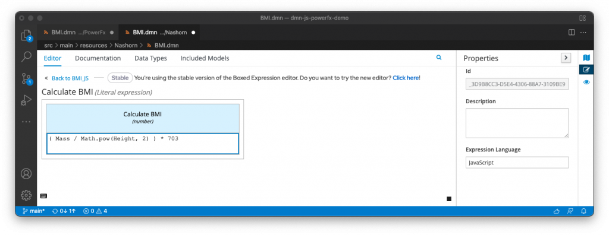
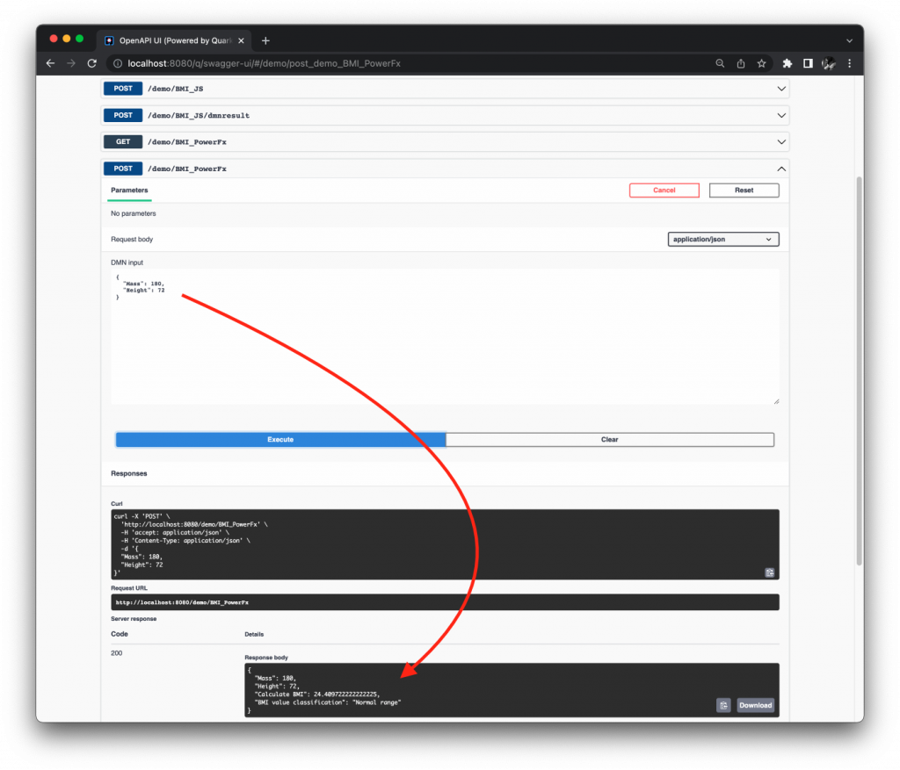

Using JavaScript and Power Fx with DMN
In this short update, I want to share with you about an experimental feature to leverage the extensibility of the DMN specification to evaluate expressions using a plurality of expression languages, such as JavaScript, Power Fx, and potentially many more!
For the running example in this post, let’s use the Body Mass Index (BMI) calculation described in the Wikipedia page:

We can classify the result of the calculation, based on a standard Decision Table:

The decision table has been simplified if compared to the original article from Wikipedia, but that’s irrelevant for the scope of this example.
The overall DRG of the DMN model looks like this:

As we expect, "Mass" and "Height" are the InputDatas of the model; then we calculate the BMI with a first Decision node. Finally, we classify the calculated BMI value, accordingly to the Decision Table above.
The last step is to provide the expression for the "Calculate BMI" decision node.
For example, using Power Fx idioms:

It would result in this final expression for the "Calculate BMI" decision node:

In this case, the resulting DMN model evaluates using two expression languages: Power Fx for the first Decision, and the default (FEEL) for the Decision Table.
For another example, we could use idiomatic JavaScript:

In this second case, the resulting DMN model evaluates using two expression languages: JavaScript for the first Decision, and again FEEL for the Decision Table.
Running the demo
We can now run the Kogito application.
To demonstrate the BMI calculation, we naturally keep using the Swagger GUI:

If you are already accustomed in using DMN models with Kogito, you will have noticed there is basically no different in the way this system behaves from an external point of view.
This is what we expect!
We have now defined two DMN models, using a plurality of expression languages. However, our goal is to model our decision services in the most convenient and effective way possible. In this case, for example, we have used Power Fx, or JavaScript for some calculations.
The code of this demo for the curious, is available here.
Conclusions
Don’t forget to check out the video linked above, for a live demonstration of this experimental capability!
In this post, we have leveraged the extensibility of the DMN specification, in order to evaluate expressions using a plurality of expression languages. We have just used JavaScript and Power Fx with DMN!
Questions?
Feedback?
Don’t hesitate to let us know!